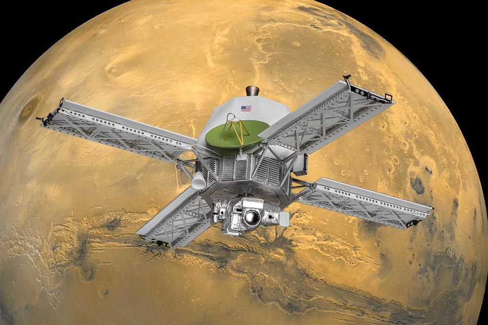
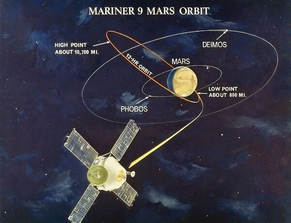

Misiunea Mariner 9
Mariner 9 a fost o misiune spațială lansată de NASA pentru a studia planeta Marte. Lansată la 30 mai 1971, aceasta a fost prima sondă spațială care a orbitat Marte și a adus contribuții semnificative la cunoașterea noastră despre această planetă. Instrumentele științifice avansate ale misiunii au permis studii geologice și monitorizarea atmosferei marțiene.
Caracteristici ale Misiunii
1. Instrumentație Științifică
- Camere Fotografice: Echipate cu camere fotografice avansate pentru capturarea detaliilor suprafeței marțiene.
- Spectrometre: Instrumente pentru analiza compoziției atmosferei și a suprafeței planetei.
2. Orbita și Durata Misiunii
- Orbita Marțiană: Intrarea în orbită a avut loc în noiembrie 1971, fiind prima sondă care a orbitat o altă planetă.
- Durata Misiunii: Misiunea a durat aproximativ un an, colectând date pe parcursul mai multor luni marțiene.
3. Contribuții Majore
- Studii Geologice: Imaginile detaliate au dezvăluit caracteristici geologice complexe, inclusiv canioane, vulcani și câmpii de rocă.
- Monitorizarea Schimbărilor Atmosferice: Misiunea a ajutat la monitorizarea schimbărilor sezoniere și atmosferice de pe Marte.
Impactul Misiunii
1. Avansarea Cunoașterii Despre Marte
- Descoperiri Geologice: Imaginile au schimbat fundamental percepția asupra evoluției și compoziției suprafeței marțiene.
- Confirmarea Secvențelor Viking: Datele au contribuit la confirmarea descoperirilor realizate de misiunile Viking care au urmat.
2. Inspirarea Misiunilor Spațiale Viitoare
- Pionieratul în Orbita Planetară: Mariner 9 a stabilit un precedent important pentru misiunile viitoare de studiu al planetelor prin intrarea în orbită.
- Educație și Inspirare: Misiunea a stimulat interesul publicului și a inspirat generații de cercetători.

Concluzii
Misiunea Mariner 9 rămâne un punct de referință în istoria explorării spațiale, aducând contribuții semnificative la cunoașterea noastră despre Marte și deschizând calea pentru explorarea spațială ulterioară a acestei planete fascinante.